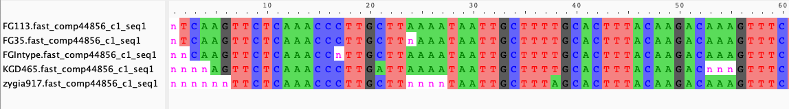

Alignment
We are now working in our folder By_locus (you can check with pwd, print working directory).
ls
comp10344_c0_seq1.fasta comp36654_c0_seq1.fasta comp41904_c0_seq1.fasta comp44802_c0_seq1.fasta comp46726_c0_seq2.fasta comp50371_c0_seq3.fasta comp53028_c0_seq2.fasta comp54662_c0_seq1.fasta
comp1072929_c0_seq1.fasta comp36697_c0_seq1.fasta comp42092_c0_seq1.fasta comp44856_c1_seq1.fasta comp46777_c0_seq1.fasta comp50626_c0_seq4.fasta comp53141_c1_seq1.fasta comp54952_c0_seq1.fasta
comp1160393_c0_seq1.fasta comp36900_c2_seq1.fasta comp42265_c0_seq1.fasta comp44887_c0_seq1.fasta comp46880_c0_seq1.fasta comp50657_c0_seq1.fasta comp53167_c1_seq1.fasta comp55034_c0_seq4.fasta
comp1313186_c0_seq1.fasta comp37141_c0_seq1.fasta comp42274_c0_seq1.fasta comp44921_c0_seq1.fasta comp47028_c0_seq2.fasta comp50758_c0_seq4.fasta comp53194_c2_seq3.fasta comp55182_c0_seq2.fasta
comp1560296_c0_seq1.fasta comp37145_c0_seq1.fasta comp42358_c0_seq1.fasta comp45038_c0_seq1.fasta comp47219_c0_seq1.fasta comp50780_c0_seq2.fasta comp53216_c0_seq2.fasta comp55210_c1_seq1.fasta
comp15827_c0_seq1.fasta comp37261_c0_seq1.fasta comp42391_c0_seq1.fasta comp45125_c0_seq2.fasta comp47508_c0_seq1.fasta comp51015_c0_seq1.fasta comp53258_c0_seq3.fasta comp55228_c0_seq8.fasta
comp1585458_c0_seq1.fasta comp37293_c0_seq1.fasta comp42471_c0_seq1.fasta comp45170_c0_seq2.fasta comp47631_c0_seq1.fasta comp51076_c0_seq1.fasta comp53279_c0_seq1.fasta comp55300_c0_seq3.fasta
comp1771791_c0_seq1.fasta comp37377_c0_seq1.fasta comp42557_c0_seq1.fasta comp45310_c0_seq2.fasta comp47751_c0_seq1.fasta comp51091_c2_seq5.fasta comp53279_c1_seq1.fasta comp55479_c0_seq1.fasta
comp19402_c0_seq1.fasta comp37644_c0_seq1.fasta comp42703_c0_seq1.fasta comp45467_c0_seq1.fasta comp48019_c0_seq2.fasta comp51118_c0_seq1.fasta comp53340_c0_seq1.fasta comp55618_c0_seq2.fasta
comp2109528_c0_seq1.fasta comp38281_c0_seq1.fasta comp42706_c0_seq1.fasta comp45684_c0_seq1.fasta comp48120_c0_seq1.fasta comp51236_c3_seq1.fasta comp53352_c0_seq1.fasta comp55651_c0_seq1.fasta
comp23076_c0_seq1.fasta comp38882_c0_seq1.fasta comp42737_c0_seq1.fasta comp45703_c0_seq1.fasta comp48138_c0_seq1.fasta comp51262_c0_seq4.fasta comp53451_c0_seq1.fasta comp55820_c0_seq1.fasta
comp2500263_c0_seq1.fasta comp39051_c0_seq2.fasta comp43079_c0_seq1.fasta comp45862_c0_seq1.fasta comp48212_c0_seq2.fasta comp51289_c0_seq1.fasta comp53459_c0_seq1.fasta comp55854_c0_seq4.fasta
comp26820_c0_seq1.fasta comp39192_c0_seq1.fasta comp43262_c0_seq1.fasta comp45867_c0_seq1.fasta comp48218_c0_seq1.fasta comp51314_c1_seq5.fasta comp53516_c0_seq1.fasta comp55873_c0_seq1.fasta
comp26820_c2_seq1.fasta comp39332_c0_seq1.fasta comp43290_c0_seq1.fasta comp45906_c0_seq1.fasta comp48341_c1_seq1.fasta comp51335_c0_seq1.fasta comp53540_c0_seq3.fasta comp55885_c0_seq14.fasta
comp27108_c0_seq1.fasta comp39487_c0_seq1.fasta comp43316_c0_seq1.fasta comp45994_c1_seq1.fasta comp48510_c0_seq6.fasta comp51482_c0_seq2.fasta comp53595_c0_seq20.fasta comp55899_c0_seq1.fasta
comp27375_c0_seq1.fasta comp39600_c0_seq2.fasta comp43396_c0_seq1.fasta comp46025_c0_seq1.fasta comp48513_c0_seq2.fasta comp51566_c0_seq1.fasta comp53604_c0_seq2.fasta comp56022_c2_seq1.fasta
comp27897_c0_seq1.fasta comp39985_c0_seq4.fasta comp43405_c0_seq1.fasta comp46036_c0_seq1.fasta comp48566_c2_seq1.fasta comp51608_c0_seq1.fasta comp53688_c0_seq1.fasta comp56134_c0_seq6.fasta
comp2794198_c0_seq1.fasta comp40415_c0_seq2.fasta comp43423_c0_seq1.fasta comp46048_c0_seq1.fasta comp48873_c0_seq1.fasta comp51641_c0_seq2.fasta comp53769_c0_seq1.fasta comp56192_c1_seq2.fasta
comp28617_c0_seq1.fasta comp40581_c0_seq1.fasta comp43426_c1_seq1.fasta comp46121_c0_seq1.fasta comp49023_c0_seq1.fasta comp51649_c1_seq1.fasta comp53857_c0_seq1.fasta comp56254_c1_seq2.fasta
comp28839_c0_seq1.fasta comp40592_c0_seq5.fasta comp43486_c0_seq1.fasta comp46261_c0_seq1.fasta comp49083_c0_seq1.fasta comp51744_c1_seq15.fasta comp53868_c0_seq1.fasta comp56258_c0_seq1.fasta
comp28983_c0_seq1.fasta comp40615_c0_seq1.fasta comp43766_c1_seq1.fasta comp46270_c0_seq1.fasta comp49109_c0_seq4.fasta comp51757_c0_seq1.fasta comp53881_c0_seq1.fasta comp56397_c0_seq2.fasta
comp30427_c0_seq1.fasta comp40678_c0_seq1.fasta comp43766_c2_seq1.fasta comp46275_c0_seq1.fasta comp49294_c0_seq2.fasta comp52070_c1_seq13.fasta comp53904_c0_seq1.fasta comp56474_c0_seq2.fasta
comp30607_c0_seq1.fasta comp40970_c0_seq1.fasta comp43779_c0_seq1.fasta comp46303_c0_seq1.fasta comp49369_c0_seq1.fasta comp52112_c0_seq3.fasta comp53952_c0_seq2.fasta comp56606_c0_seq4.fasta
comp3174_c0_seq1.fasta comp40970_c1_seq1.fasta comp43819_c0_seq1.fasta comp46343_c0_seq1.fasta comp49386_c0_seq1.fasta comp52180_c0_seq2.fasta comp53978_c0_seq1.fasta comp56609_c0_seq1.fasta
comp31767_c0_seq1.fasta comp41024_c0_seq1.fasta comp43866_c0_seq1.fasta comp46351_c1_seq1.fasta comp49395_c0_seq1.fasta comp52237_c0_seq1.fasta comp54031_c0_seq1.fasta comp56733_c0_seq5.fasta
comp31780_c0_seq1.fasta comp41081_c0_seq1.fasta comp43995_c0_seq2.fasta comp46465_c0_seq1.fasta comp49523_c1_seq1.fasta comp52492_c1_seq2.fasta comp54072_c0_seq2.fasta comp56747_c1_seq2.fasta
comp32261_c0_seq1.fasta comp41267_c0_seq2.fasta comp44153_c0_seq1.fasta comp46465_c2_seq1.fasta comp49588_c0_seq1.fasta comp52663_c0_seq1.fasta comp54142_c0_seq1.fasta comp56887_c0_seq1.fasta
comp338739_c0_seq1.fasta comp41473_c0_seq1.fasta comp44212_c0_seq1.fasta comp46472_c0_seq1.fasta comp49673_c0_seq1.fasta comp52686_c0_seq2.fasta comp54299_c0_seq1.fasta comp56896_c0_seq1.fasta
comp33962_c0_seq1.fasta comp41570_c0_seq1.fasta comp44244_c0_seq1.fasta comp46489_c0_seq1.fasta comp49874_c0_seq1.fasta comp52711_c0_seq1.fasta comp54421_c1_seq1.fasta comp56903_c0_seq3.fasta
comp35561_c0_seq1.fasta comp41589_c0_seq1.fasta comp44391_c1_seq1.fasta comp46497_c0_seq2.fasta comp49929_c0_seq1.fasta comp52736_c0_seq1.fasta comp54430_c2_seq4.fasta comp56968_c0_seq5.fasta
comp35797_c0_seq1.fasta comp41658_c0_seq1.fasta comp44503_c0_seq2.fasta comp46551_c0_seq1.fasta comp50161_c0_seq1.fasta comp52829_c0_seq3.fasta comp54453_c0_seq1.fasta comp710440_c0_seq1.fasta
comp36008_c0_seq1.fasta comp41758_c0_seq1.fasta comp44609_c0_seq1.fasta comp46553_c1_seq1.fasta comp50170_c0_seq12.fasta comp52915_c0_seq2.fasta comp54484_c0_seq1.fasta comp816108_c0_seq1.fasta
comp36444_c1_seq1.fasta comp41859_c0_seq1.fasta comp44627_c0_seq1.fasta comp46693_c0_seq1.fasta comp50204_c0_seq1.fasta comp52981_c1_seq1.fasta comp546012_c0_seq1.fasta comp826804_c0_seq1.fasta
If we open one of these alignments (for example using Aliview https://ormbunkar.se/aliview/) you will see a file including all five accessions:
We will use the script tidy_mafft.sh to replace name of sequences with just the accession name, convert bases to uppercase, and align the sequences with the software mafft.
tidy_mafft.sh
#! /bin/bash -x
# to go from the output of switch multifastas.py to the mafft files ready to trimal
#Catherine Kidner 18 Nov 2014
echo "Hello world"
acc=$1
echo "You're working on accession $1"
switched=${acc}.fasta
no_loci_name=${acc}_f.fna
mafft=${acc}_mafft.fasta
fna=${acc}.fna
fasta=${acc}.fasta
sed "s/_$acc//g" $switched > $no_loci_name
sed "s/[rywsmkdvhb]/n/g" $no_loci_name > $fna
tr '[:lower:]' '[:upper:]' < $fna > $fasta
rm $no_loci_name
rm $fna
mafft --thread 8 $fasta > $mafft
exit 0
We will use the locus_list as input in the loop, so we need to copy it to the folder we are working on:
cp ../locus_list .
while read f; do ./tidy_mafft.sh "$f" ; done < locus_list
Let’s see what we have in our folder now:
ls
comp10344_c0_seq1.fasta comp39051_c0_seq2_mafft.fasta comp43819_c0_seq1.fasta comp46777_c0_seq1_mafft.fasta comp51335_c0_seq1.fasta comp54031_c0_seq1_mafft.fasta
comp10344_c0_seq1_mafft.fasta comp39192_c0_seq1.fasta comp43819_c0_seq1_mafft.fasta comp46880_c0_seq1.fasta comp51335_c0_seq1_mafft.fasta comp54072_c0_seq2.fasta
comp1072929_c0_seq1.fasta comp39192_c0_seq1_mafft.fasta comp43866_c0_seq1.fasta comp46880_c0_seq1_mafft.fasta comp51482_c0_seq2.fasta comp54072_c0_seq2_mafft.fasta
comp1072929_c0_seq1_mafft.fasta comp39332_c0_seq1.fasta comp43866_c0_seq1_mafft.fasta comp47028_c0_seq2.fasta comp51482_c0_seq2_mafft.fasta comp54142_c0_seq1.fasta
comp1160393_c0_seq1.fasta comp39332_c0_seq1_mafft.fasta comp43995_c0_seq2.fasta comp47028_c0_seq2_mafft.fasta comp51566_c0_seq1.fasta comp54142_c0_seq1_mafft.fasta
comp1160393_c0_seq1_mafft.fasta comp39487_c0_seq1.fasta comp43995_c0_seq2_mafft.fasta comp47219_c0_seq1.fasta comp51566_c0_seq1_mafft.fasta comp54299_c0_seq1.fasta
comp1313186_c0_seq1.fasta comp39487_c0_seq1_mafft.fasta comp44153_c0_seq1.fasta comp47219_c0_seq1_mafft.fasta comp51608_c0_seq1.fasta comp54299_c0_seq1_mafft.fasta
comp1313186_c0_seq1_mafft.fasta comp39600_c0_seq2.fasta comp44153_c0_seq1_mafft.fasta comp47508_c0_seq1.fasta comp51608_c0_seq1_mafft.fasta comp54421_c1_seq1.fasta
comp1560296_c0_seq1.fasta comp39600_c0_seq2_mafft.fasta comp44212_c0_seq1.fasta comp47508_c0_seq1_mafft.fasta comp51641_c0_seq2.fasta comp54421_c1_seq1_mafft.fasta
comp1560296_c0_seq1_mafft.fasta comp39985_c0_seq4.fasta comp44212_c0_seq1_mafft.fasta comp47631_c0_seq1.fasta comp51641_c0_seq2_mafft.fasta comp54430_c2_seq4.fasta
comp15827_c0_seq1.fasta comp39985_c0_seq4_mafft.fasta comp44244_c0_seq1.fasta comp47631_c0_seq1_mafft.fasta comp51649_c1_seq1.fasta comp54430_c2_seq4_mafft.fasta
comp15827_c0_seq1_mafft.fasta comp40415_c0_seq2.fasta comp44244_c0_seq1_mafft.fasta comp47751_c0_seq1.fasta comp51649_c1_seq1_mafft.fasta comp54453_c0_seq1.fasta
comp1585458_c0_seq1.fasta comp40415_c0_seq2_mafft.fasta comp44391_c1_seq1.fasta comp47751_c0_seq1_mafft.fasta comp51744_c1_seq15.fasta comp54453_c0_seq1_mafft.fasta
comp1585458_c0_seq1_mafft.fasta comp40581_c0_seq1.fasta comp44391_c1_seq1_mafft.fasta comp48019_c0_seq2.fasta comp51744_c1_seq15_mafft.fasta comp54484_c0_seq1.fasta
comp1771791_c0_seq1.fasta comp40581_c0_seq1_mafft.fasta comp44503_c0_seq2.fasta comp48019_c0_seq2_mafft.fasta comp51757_c0_seq1.fasta comp54484_c0_seq1_mafft.fasta
comp1771791_c0_seq1_mafft.fasta comp40592_c0_seq5.fasta comp44503_c0_seq2_mafft.fasta comp48120_c0_seq1.fasta comp51757_c0_seq1_mafft.fasta comp546012_c0_seq1.fasta
comp19402_c0_seq1.fasta comp40592_c0_seq5_mafft.fasta comp44609_c0_seq1.fasta comp48120_c0_seq1_mafft.fasta comp52070_c1_seq13.fasta comp546012_c0_seq1_mafft.fasta
comp19402_c0_seq1_mafft.fasta comp40615_c0_seq1.fasta comp44609_c0_seq1_mafft.fasta comp48138_c0_seq1.fasta comp52070_c1_seq13_mafft.fasta comp54662_c0_seq1.fasta
comp2109528_c0_seq1.fasta comp40615_c0_seq1_mafft.fasta comp44627_c0_seq1.fasta comp48138_c0_seq1_mafft.fasta comp52112_c0_seq3.fasta comp54662_c0_seq1_mafft.fasta
comp2109528_c0_seq1_mafft.fasta comp40678_c0_seq1.fasta comp44627_c0_seq1_mafft.fasta comp48212_c0_seq2.fasta comp52112_c0_seq3_mafft.fasta comp54952_c0_seq1.fasta
comp23076_c0_seq1.fasta comp40678_c0_seq1_mafft.fasta comp44802_c0_seq1.fasta comp48212_c0_seq2_mafft.fasta comp52180_c0_seq2.fasta comp54952_c0_seq1_mafft.fasta
comp23076_c0_seq1_mafft.fasta comp40970_c0_seq1.fasta comp44802_c0_seq1_mafft.fasta comp48218_c0_seq1.fasta comp52180_c0_seq2_mafft.fasta comp55034_c0_seq4.fasta
comp2500263_c0_seq1.fasta comp40970_c0_seq1_mafft.fasta comp44856_c1_seq1.fasta comp48218_c0_seq1_mafft.fasta comp52237_c0_seq1.fasta comp55034_c0_seq4_mafft.fasta
comp2500263_c0_seq1_mafft.fasta comp40970_c1_seq1.fasta comp44856_c1_seq1_mafft.fasta comp48341_c1_seq1.fasta comp52237_c0_seq1_mafft.fasta comp55182_c0_seq2.fasta
comp26820_c0_seq1.fasta comp40970_c1_seq1_mafft.fasta comp44887_c0_seq1.fasta comp48341_c1_seq1_mafft.fasta comp52492_c1_seq2.fasta comp55182_c0_seq2_mafft.fasta
comp26820_c0_seq1_mafft.fasta comp41024_c0_seq1.fasta comp44887_c0_seq1_mafft.fasta comp48510_c0_seq6.fasta comp52492_c1_seq2_mafft.fasta comp55210_c1_seq1.fasta
comp26820_c2_seq1.fasta comp41024_c0_seq1_mafft.fasta comp44921_c0_seq1.fasta comp48510_c0_seq6_mafft.fasta comp52663_c0_seq1.fasta comp55210_c1_seq1_mafft.fasta
comp26820_c2_seq1_mafft.fasta comp41081_c0_seq1.fasta comp44921_c0_seq1_mafft.fasta comp48513_c0_seq2.fasta comp52663_c0_seq1_mafft.fasta comp55228_c0_seq8.fasta
comp27108_c0_seq1.fasta comp41081_c0_seq1_mafft.fasta comp45038_c0_seq1.fasta comp48513_c0_seq2_mafft.fasta comp52686_c0_seq2.fasta comp55228_c0_seq8_mafft.fasta
comp27108_c0_seq1_mafft.fasta comp41267_c0_seq2.fasta comp45038_c0_seq1_mafft.fasta comp48566_c2_seq1.fasta comp52686_c0_seq2_mafft.fasta comp55300_c0_seq3.fasta
comp27375_c0_seq1.fasta comp41267_c0_seq2_mafft.fasta comp45125_c0_seq2.fasta comp48566_c2_seq1_mafft.fasta comp52711_c0_seq1.fasta comp55300_c0_seq3_mafft.fasta
comp27375_c0_seq1_mafft.fasta comp41473_c0_seq1.fasta comp45125_c0_seq2_mafft.fasta comp48873_c0_seq1.fasta comp52711_c0_seq1_mafft.fasta comp55479_c0_seq1.fasta
comp27897_c0_seq1.fasta comp41473_c0_seq1_mafft.fasta comp45170_c0_seq2.fasta comp48873_c0_seq1_mafft.fasta comp52736_c0_seq1.fasta comp55479_c0_seq1_mafft.fasta
comp27897_c0_seq1_mafft.fasta comp41570_c0_seq1.fasta comp45170_c0_seq2_mafft.fasta comp49023_c0_seq1.fasta comp52736_c0_seq1_mafft.fasta comp55618_c0_seq2.fasta
comp2794198_c0_seq1.fasta comp41570_c0_seq1_mafft.fasta comp45310_c0_seq2.fasta comp49023_c0_seq1_mafft.fasta comp52829_c0_seq3.fasta comp55618_c0_seq2_mafft.fasta
comp2794198_c0_seq1_mafft.fasta comp41589_c0_seq1.fasta comp45310_c0_seq2_mafft.fasta comp49083_c0_seq1.fasta comp52829_c0_seq3_mafft.fasta comp55651_c0_seq1.fasta
comp28617_c0_seq1.fasta comp41589_c0_seq1_mafft.fasta comp45467_c0_seq1.fasta comp49083_c0_seq1_mafft.fasta comp52915_c0_seq2.fasta comp55651_c0_seq1_mafft.fasta
comp28617_c0_seq1_mafft.fasta comp41658_c0_seq1.fasta comp45467_c0_seq1_mafft.fasta comp49109_c0_seq4.fasta comp52915_c0_seq2_mafft.fasta comp55820_c0_seq1.fasta
comp28839_c0_seq1.fasta comp41658_c0_seq1_mafft.fasta comp45684_c0_seq1.fasta comp49109_c0_seq4_mafft.fasta comp52981_c1_seq1.fasta comp55820_c0_seq1_mafft.fasta
comp28839_c0_seq1_mafft.fasta comp41758_c0_seq1.fasta comp45684_c0_seq1_mafft.fasta comp49294_c0_seq2.fasta comp52981_c1_seq1_mafft.fasta comp55854_c0_seq4.fasta
comp28983_c0_seq1.fasta comp41758_c0_seq1_mafft.fasta comp45703_c0_seq1.fasta comp49294_c0_seq2_mafft.fasta comp53028_c0_seq2.fasta comp55854_c0_seq4_mafft.fasta
comp28983_c0_seq1_mafft.fasta comp41859_c0_seq1.fasta comp45703_c0_seq1_mafft.fasta comp49369_c0_seq1.fasta comp53028_c0_seq2_mafft.fasta comp55873_c0_seq1.fasta
comp30427_c0_seq1.fasta comp41859_c0_seq1_mafft.fasta comp45862_c0_seq1.fasta comp49369_c0_seq1_mafft.fasta comp53141_c1_seq1.fasta comp55873_c0_seq1_mafft.fasta
comp30427_c0_seq1_mafft.fasta comp41904_c0_seq1.fasta comp45862_c0_seq1_mafft.fasta comp49386_c0_seq1.fasta comp53141_c1_seq1_mafft.fasta comp55885_c0_seq14.fasta
comp30607_c0_seq1.fasta comp41904_c0_seq1_mafft.fasta comp45867_c0_seq1.fasta comp49386_c0_seq1_mafft.fasta comp53167_c1_seq1.fasta comp55885_c0_seq14_mafft.fasta
comp30607_c0_seq1_mafft.fasta comp42092_c0_seq1.fasta comp45867_c0_seq1_mafft.fasta comp49395_c0_seq1.fasta comp53167_c1_seq1_mafft.fasta comp55899_c0_seq1.fasta
comp3174_c0_seq1.fasta comp42092_c0_seq1_mafft.fasta comp45906_c0_seq1.fasta comp49395_c0_seq1_mafft.fasta comp53194_c2_seq3.fasta comp55899_c0_seq1_mafft.fasta
comp3174_c0_seq1_mafft.fasta comp42265_c0_seq1.fasta comp45906_c0_seq1_mafft.fasta comp49523_c1_seq1.fasta comp53194_c2_seq3_mafft.fasta comp56022_c2_seq1.fasta
comp31767_c0_seq1.fasta comp42265_c0_seq1_mafft.fasta comp45994_c1_seq1.fasta comp49523_c1_seq1_mafft.fasta comp53216_c0_seq2.fasta comp56022_c2_seq1_mafft.fasta
comp31767_c0_seq1_mafft.fasta comp42274_c0_seq1.fasta comp45994_c1_seq1_mafft.fasta comp49588_c0_seq1.fasta comp53216_c0_seq2_mafft.fasta comp56134_c0_seq6.fasta
comp31780_c0_seq1.fasta comp42274_c0_seq1_mafft.fasta comp46025_c0_seq1.fasta comp49588_c0_seq1_mafft.fasta comp53258_c0_seq3.fasta comp56134_c0_seq6_mafft.fasta
comp31780_c0_seq1_mafft.fasta comp42358_c0_seq1.fasta comp46025_c0_seq1_mafft.fasta comp49673_c0_seq1.fasta comp53258_c0_seq3_mafft.fasta comp56192_c1_seq2.fasta
comp32261_c0_seq1.fasta comp42358_c0_seq1_mafft.fasta comp46036_c0_seq1.fasta comp49673_c0_seq1_mafft.fasta comp53279_c0_seq1.fasta comp56192_c1_seq2_mafft.fasta
comp32261_c0_seq1_mafft.fasta comp42391_c0_seq1.fasta comp46036_c0_seq1_mafft.fasta comp49874_c0_seq1.fasta comp53279_c0_seq1_mafft.fasta comp56254_c1_seq2.fasta
comp338739_c0_seq1.fasta comp42391_c0_seq1_mafft.fasta comp46048_c0_seq1.fasta comp49874_c0_seq1_mafft.fasta comp53279_c1_seq1.fasta comp56254_c1_seq2_mafft.fasta
comp338739_c0_seq1_mafft.fasta comp42471_c0_seq1.fasta comp46048_c0_seq1_mafft.fasta comp49929_c0_seq1.fasta comp53279_c1_seq1_mafft.fasta comp56258_c0_seq1.fasta
comp33962_c0_seq1.fasta comp42471_c0_seq1_mafft.fasta comp46121_c0_seq1.fasta comp49929_c0_seq1_mafft.fasta comp53340_c0_seq1.fasta comp56258_c0_seq1_mafft.fasta
comp33962_c0_seq1_mafft.fasta comp42557_c0_seq1.fasta comp46121_c0_seq1_mafft.fasta comp50161_c0_seq1.fasta comp53340_c0_seq1_mafft.fasta comp56397_c0_seq2.fasta
comp35561_c0_seq1.fasta comp42557_c0_seq1_mafft.fasta comp46261_c0_seq1.fasta comp50161_c0_seq1_mafft.fasta comp53352_c0_seq1.fasta comp56397_c0_seq2_mafft.fasta
comp35561_c0_seq1_mafft.fasta comp42703_c0_seq1.fasta comp46261_c0_seq1_mafft.fasta comp50170_c0_seq12.fasta comp53352_c0_seq1_mafft.fasta comp56474_c0_seq2.fasta
comp35797_c0_seq1.fasta comp42703_c0_seq1_mafft.fasta comp46270_c0_seq1.fasta comp50170_c0_seq12_mafft.fasta comp53451_c0_seq1.fasta comp56474_c0_seq2_mafft.fasta
comp35797_c0_seq1_mafft.fasta comp42706_c0_seq1.fasta comp46270_c0_seq1_mafft.fasta comp50204_c0_seq1.fasta comp53451_c0_seq1_mafft.fasta comp56606_c0_seq4.fasta
comp36008_c0_seq1.fasta comp42706_c0_seq1_mafft.fasta comp46275_c0_seq1.fasta comp50204_c0_seq1_mafft.fasta comp53459_c0_seq1.fasta comp56606_c0_seq4_mafft.fasta
comp36008_c0_seq1_mafft.fasta comp42737_c0_seq1.fasta comp46275_c0_seq1_mafft.fasta comp50371_c0_seq3.fasta comp53459_c0_seq1_mafft.fasta comp56609_c0_seq1.fasta
comp36444_c1_seq1.fasta comp42737_c0_seq1_mafft.fasta comp46303_c0_seq1.fasta comp50371_c0_seq3_mafft.fasta comp53516_c0_seq1.fasta comp56609_c0_seq1_mafft.fasta
comp36444_c1_seq1_mafft.fasta comp43079_c0_seq1.fasta comp46303_c0_seq1_mafft.fasta comp50626_c0_seq4.fasta comp53516_c0_seq1_mafft.fasta comp56733_c0_seq5.fasta
comp36654_c0_seq1.fasta comp43079_c0_seq1_mafft.fasta comp46343_c0_seq1.fasta comp50626_c0_seq4_mafft.fasta comp53540_c0_seq3.fasta comp56733_c0_seq5_mafft.fasta
comp36654_c0_seq1_mafft.fasta comp43262_c0_seq1.fasta comp46343_c0_seq1_mafft.fasta comp50657_c0_seq1.fasta comp53540_c0_seq3_mafft.fasta comp56747_c1_seq2.fasta
comp36697_c0_seq1.fasta comp43262_c0_seq1_mafft.fasta comp46351_c1_seq1.fasta comp50657_c0_seq1_mafft.fasta comp53595_c0_seq20.fasta comp56747_c1_seq2_mafft.fasta
comp36697_c0_seq1_mafft.fasta comp43290_c0_seq1.fasta comp46351_c1_seq1_mafft.fasta comp50758_c0_seq4.fasta comp53595_c0_seq20_mafft.fasta comp56887_c0_seq1.fasta
comp36900_c2_seq1.fasta comp43290_c0_seq1_mafft.fasta comp46465_c0_seq1.fasta comp50758_c0_seq4_mafft.fasta comp53604_c0_seq2.fasta comp56887_c0_seq1_mafft.fasta
comp36900_c2_seq1_mafft.fasta comp43316_c0_seq1.fasta comp46465_c0_seq1_mafft.fasta comp50780_c0_seq2.fasta comp53604_c0_seq2_mafft.fasta comp56896_c0_seq1.fasta
comp37141_c0_seq1.fasta comp43316_c0_seq1_mafft.fasta comp46465_c2_seq1.fasta comp50780_c0_seq2_mafft.fasta comp53688_c0_seq1.fasta comp56896_c0_seq1_mafft.fasta
comp37141_c0_seq1_mafft.fasta comp43396_c0_seq1.fasta comp46465_c2_seq1_mafft.fasta comp51015_c0_seq1.fasta comp53688_c0_seq1_mafft.fasta comp56903_c0_seq3.fasta
comp37145_c0_seq1.fasta comp43396_c0_seq1_mafft.fasta comp46472_c0_seq1.fasta comp51015_c0_seq1_mafft.fasta comp53769_c0_seq1.fasta comp56903_c0_seq3_mafft.fasta
comp37145_c0_seq1_mafft.fasta comp43405_c0_seq1.fasta comp46472_c0_seq1_mafft.fasta comp51076_c0_seq1.fasta comp53769_c0_seq1_mafft.fasta comp56968_c0_seq5.fasta
comp37261_c0_seq1.fasta comp43405_c0_seq1_mafft.fasta comp46489_c0_seq1.fasta comp51076_c0_seq1_mafft.fasta comp53857_c0_seq1.fasta comp56968_c0_seq5_mafft.fasta
comp37261_c0_seq1_mafft.fasta comp43423_c0_seq1.fasta comp46489_c0_seq1_mafft.fasta comp51091_c2_seq5.fasta comp53857_c0_seq1_mafft.fasta comp710440_c0_seq1.fasta
comp37293_c0_seq1.fasta comp43423_c0_seq1_mafft.fasta comp46497_c0_seq2.fasta comp51091_c2_seq5_mafft.fasta comp53868_c0_seq1.fasta comp710440_c0_seq1_mafft.fasta
comp37293_c0_seq1_mafft.fasta comp43426_c1_seq1.fasta comp46497_c0_seq2_mafft.fasta comp51118_c0_seq1.fasta comp53868_c0_seq1_mafft.fasta comp816108_c0_seq1.fasta
comp37377_c0_seq1.fasta comp43426_c1_seq1_mafft.fasta comp46551_c0_seq1.fasta comp51118_c0_seq1_mafft.fasta comp53881_c0_seq1.fasta comp816108_c0_seq1_mafft.fasta
comp37377_c0_seq1_mafft.fasta comp43486_c0_seq1.fasta comp46551_c0_seq1_mafft.fasta comp51236_c3_seq1.fasta comp53881_c0_seq1_mafft.fasta comp826804_c0_seq1.fasta
comp37644_c0_seq1.fasta comp43486_c0_seq1_mafft.fasta comp46553_c1_seq1.fasta comp51236_c3_seq1_mafft.fasta comp53904_c0_seq1.fasta comp826804_c0_seq1_mafft.fasta
comp37644_c0_seq1_mafft.fasta comp43766_c1_seq1.fasta comp46553_c1_seq1_mafft.fasta comp51262_c0_seq4.fasta comp53904_c0_seq1_mafft.fasta locus_list
comp38281_c0_seq1.fasta comp43766_c1_seq1_mafft.fasta comp46693_c0_seq1.fasta comp51262_c0_seq4_mafft.fasta comp53952_c0_seq2.fasta tidy_mafft.sh
comp38281_c0_seq1_mafft.fasta comp43766_c2_seq1.fasta comp46693_c0_seq1_mafft.fasta comp51289_c0_seq1.fasta comp53952_c0_seq2_mafft.fasta
comp38882_c0_seq1.fasta comp43766_c2_seq1_mafft.fasta comp46726_c0_seq2.fasta comp51289_c0_seq1_mafft.fasta comp53978_c0_seq1.fasta
comp38882_c0_seq1_mafft.fasta comp43779_c0_seq1.fasta comp46726_c0_seq2_mafft.fasta comp51314_c1_seq5.fasta comp53978_c0_seq1_mafft.fasta
comp39051_c0_seq2.fasta comp43779_c0_seq1_mafft.fasta comp46777_c0_seq1.fasta comp51314_c1_seq5_mafft.fasta comp54031_c0_seq1.fasta
You can download some of the alignments to your local machine and look at them using a graphical user interface software (e.g. Aliview https://ormbunkar.se/aliview/). You will see that many regions of the alignments have gaps. We will use the software trimAl to clip those gappy regions. trimAl is a tool for the automated removal of spurious sequences or poorly aligned regions from a multiple sequence alignment.
while read f ; do trimal -in "$f"_mafft.fasta -out "$f"_strict_trimmed.fasta -strict -fasta ; done < locus_list
We will now use AMAS to get a summary statistics of each alignment and to concatenate our ${locus}_strict_trimmed.fasta loci:
python amas.py summary -i *_strict_trimmed.fasta -f fasta -d dna -o all_loci_summary.txt
python amas.py concat -i *_strict_trimmed.fasta -u fasta -f fasta -d dna -t all_loci.fasta -p all_loci_partitions.txt
Our final alignment can now be used as an input to infer a phylogeny.